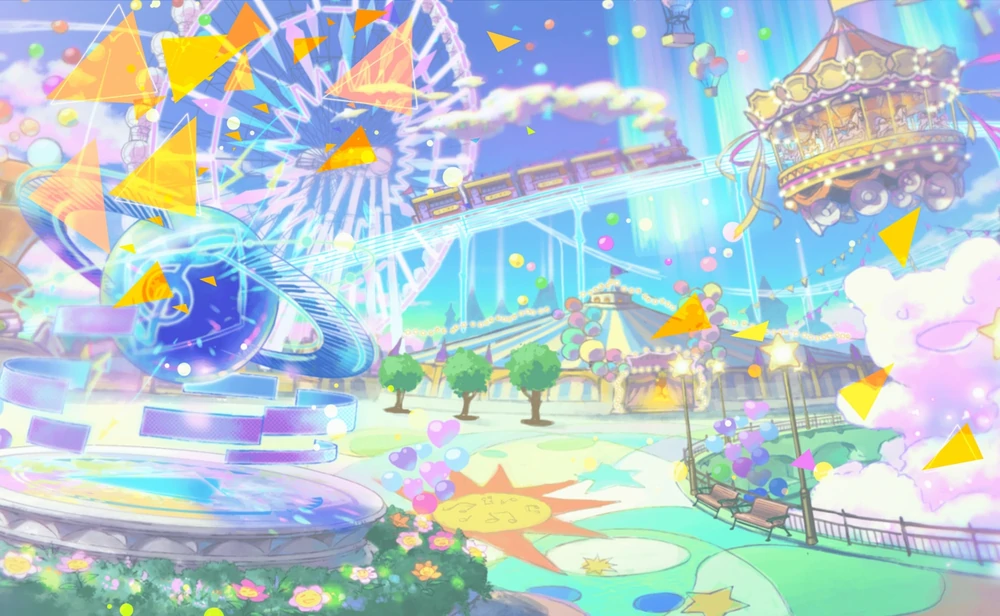

Секаи (Мир) — это загадочные миры, отличные от реального мира,
в которых живут Виртуальные певцы.

Существуют различные Секаи, каждый из которых соответствует желаниям его создателя,
желающих выразить свои чувства через песни. Чувства человека обретают физическую форму внутри Секая.
В этих мирах, в различных формах в зависимости от каждого Секая, живут и появляются Виртуальные певцы.
Они помогают людям найти свои истинные чувства.
Люди могут путешествовать в Секай, используя песни «Без названия». Эти песни не имеют мелодии или текста и
создаются одновременно с Секаем. Воспроизведение песни «Без названия» перенесёт слушателя в Секай.